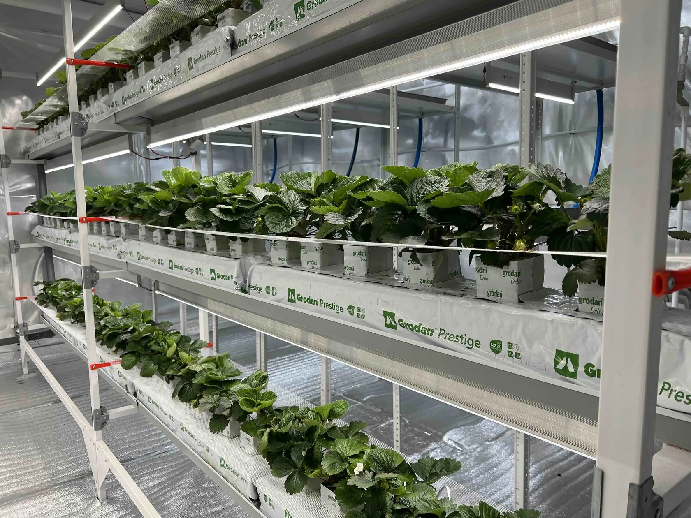

Ситуация 01
Нужно быстро проверить решение
- Есть один узел, конфигурация или развилка, где не хочется ошибиться.
- Нужно быстро понять, что делать сначала и что не покупать вслепую.
Эта страница для запусков, действующих ферм и точечных проблем, где нужен не общий совет, а профессиональный разбор ситуации и ясность по тому, что делать дальше.
Если вопрос упирается в качество ягоды, свет, полив, корневую зону, запуск или выбор решения, консультация помогает быстро увидеть приоритеты и понять, что имеет смысл делать дальше: покупать, пересчитывать или идти в сопровождение.
Если задачу можно сузить до одного узла, одного решения или одного критичного вопроса, консультация помогает быстро снять неопределённость без длинного процесса.
Здесь быстро выясняют, где реальная причина, что проверять первым и нужен ли дальше более длинный формат работы.



Параметры среды и их влияние на цикл, генерацию и стабильность результата.
Режим полива, схема подачи раствора, дефициты и управляемость корня.
Размер, вкус, плотность и то, как отклонения бьют по конечному результату.
Проверка решения, fit по узлу и понимание, стоит ли считать, покупать или идти в сопровождение.
Это для тех, кому сначала хочется спокойно собрать основу по технологии, а не разбирать свой объект по узлам.
Что происходит: вопрос уже сузился до одного узла, модели или развилки.
Что даёт консультация: появляется понятный ответ, что брать, а что пока не трогать.
Что происходит: команда видит симптом, но не понимает, с чего начинать проверку.
Что даёт консультация: появляется приоритетный порядок действий без хаоса и лишних гипотез.
Что происходит: пока неясно, это точечный вопрос или уже системная задача.
Что даёт консультация: становится ясно, закрывается ли вопрос за один разбор или нужен другой формат.
Консультация подходит для одной конкретной задачи. Сопровождение нужно, когда решений несколько и их надо вести последовательно.
Да. Это один из самых частых запросов: нестабильное качество, реактивное управление параметрами или пересборка части схемы.
Если вопрос в составе проекта или комплекта, да. Если проблема уже в текущей логике фермы, лучше сразу идти сюда.
Описание проекта, фотографии, текущие параметры, масштаб, ограничения и формулировку главной проблемы.
Да. Если после разбора становится понятно, какие позиции нужны, их потом можно спокойно добрать через магазин или расчёт комплекта.
Понять, достаточно ли одной консультации, или задаче нужен более длинный формат сопровождения.
Здесь важны не длинные описания, а факты: стадия проекта, масштаб, где сейчас главный затык и нужен ли точечный разбор или сопровождение.
Когда нужно быстро понять приоритеты и не растягивать работу на длинный процесс.
Когда проект уже требует не одного созвона, а более системной работы.
Форма для консультации, аудита и сопровождения.